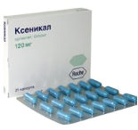
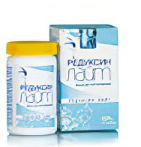
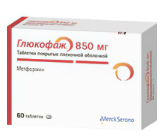
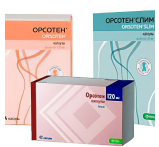
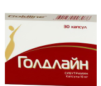

Таблетки для похудения
Ксеникал

Действие препарата основано на воздействии орлистата на ферменты, расщепляющие жиры.
Инактивация ферментов приводит к потере ими способности расщеплять жиры на моноглицериды и
жирные кислоты. Эти питательные элементы не всасываются в кровоток сквозь стенки кишечника,
организм получает сниженное количество калорий, вес снижается.
Редуксин

Редуксин проявляет свое действие в результате комплексной терапии, на фоне физических
нагрузок и специально разработанной диеты. Основное действующее вещество препарата
Сибутрамин – химическое соединение, требующее особой осторожности при использовании, так как
оно действует на все отделы ЦНС.
Глюкофаж

Глюкофаж предназначен для снижения уровня сахара крови. Однако, он помогает избавиться от
лишнего веса не только пациентам с диабетом, но и здоровым людям. При этом похудение будет
происходить без вреда для здоровья. Параллельно улучшаются показатели холестерина и
триглицеридов крови.
Орсотен

Орсотен является ингибитором желудочно-кишечных липаз. Лекарственное средство действует в
желудке и тонком кишечнике, инактивируя расщепляющие жиры ферменты. Жиры вследствие действия
препарата уже не расщепляются, не абсорбируются в кровь. Снижается количество калорий,
поступающих в организм, что ведет к уменьшению массы тела.
Голдлайн

Действующее вещество Сибутрамин производит первичные и вторичные амины. В результате
биохимических реакций снижается потребность в пище, быстро появляется чувство насыщения, что
приводит к потере веса.